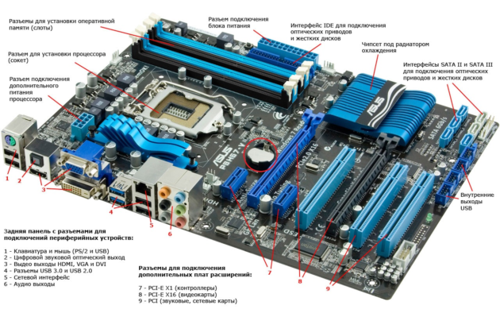
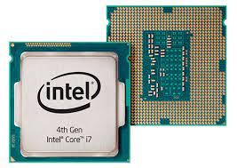
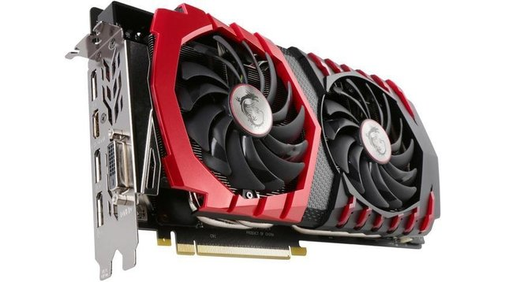
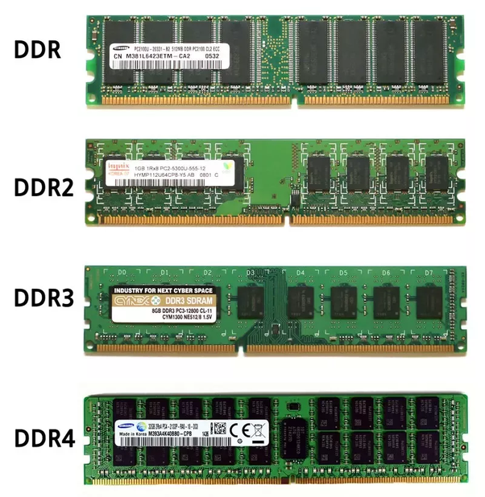
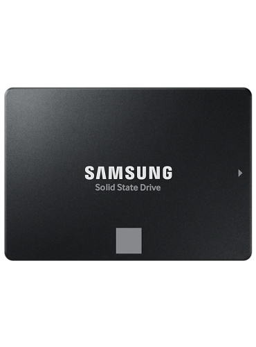
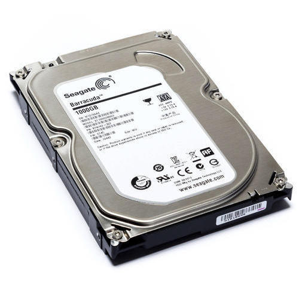
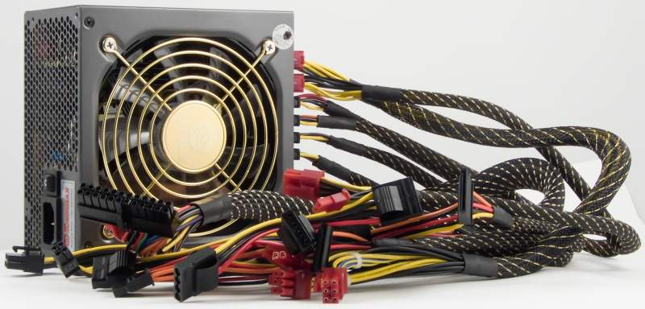
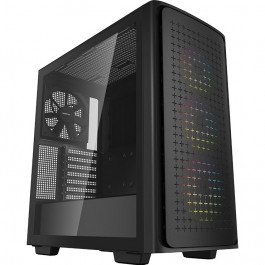

Комплектуючі
-
Материнська плата
головна ланка, яка пов'язує між собою все інше. Виглядає вона як платформа з купою портів.
У них ставиться апаратна начинка.
Материнка – основа ПК: вона перетворює модульну конструкцію з безлічі комплектуючих в єдину
систему.Від характеристик «матері» залежать можливості і продуктивність системника або ж лептопа.
Вона відповідає за взаємодію всього заліза збірці: від процесора, ОЗУ і накопичувачів до
всіляких периферійних пристроїв.

-
Центральний процесор (ЦП або в англійському варіанті CPU) є серцем будь-якої комп'ютерної
системи.На нього покладені всі обчислювальні операції, причому не тільки арифметичні або
обчислення з плаваючою комою (змінюється мантиса), але й логічні.Сам процесор являє собою
невелику квадратну пластину (чіп), всередині якої знаходяться мільйони транзисторів.
Іноді це пристрій називають ще інтегральною мікросхемою.

-
Відеокарта - важливий компонент комп'ютера / ноутбука, який відповідає за обробку і
підготовку графіки до відображення на екрані.

-
Оперативної пам'яттю називають елемент комп'ютерної системи, що відповідає за тимчасове
зберігання програмного коду при роботі з операційною системою і встановленими додатками.
Швидкодія всієї системи залежить від обсягу оперативної пам'яті. Чим її більше, тим швидше
функціонує програмна частина вашого пристрою. Тим більше важких (і не дуже) додатків ви можете
запускати одноразово.

-
SSD-диск - це запам'ятовуючий комп'ютерний пристрій, в якому немає механічних елементів.
Для зберігання інформації в ньому використовуються мікросхеми пам'яті.
Тобто, іншими словами SSD-диск це та ж, грубо кажучи, велика флешка.

-
Жорсткий диск- один з основних компонентів будь-якої комп'ютерної машини. Можна зустріти
різні назви цього пристрою, наприклад, HDD, гвинт, вінчестер, хард, фізичний диск, але в цілому
всі вони означають одне і те ж - спеціальний накопичувач для комп'ютерної інформації.
Жорсткий диск - обов'язкова складова будь-якого сервера. Накопичувач пам'яті забезпечує роботу
системи, так як на нього встановлюється операційна система пристрою.

-
Комп'ю́терний блок жи́влення — блок живлення , призначений для забезпечення вузлів
комп'ютера електричною енергією постійного струму. У його завдання входить перетворення
мережевої напруги до заданих значень напруги живлення, її стабілізація і захист від незначних
перешкод з боку електричних мереж живлення. Також, завдяки вбудованому вентилятору, він бере
участь в охолоджуванні системного блоку.

-
Корпус комп’ютера служить головним чином як спосіб фізичного монтажу
та зберігання всіх фактичних компонентів усередині комп’ютера, таких
як материнська плата, жорсткий диск, оптичний привід, привід гнучких дисків тощо.
